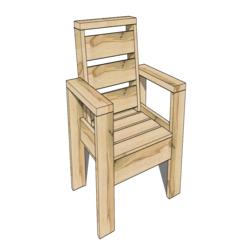
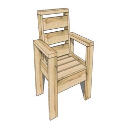

Caleb Lim
I graduated from Westview high school in 2023 with a 3.6 gpa. During high school I took various classes such as Web Design, Photography, and Graphic Design. Now I am currently a full time student at University of California Riverside. I am an undeclared major, but I am leaning towards business or psychology. I plan on just trying to graduate with a solid gpa in order to possibly go to graduate school. I am thinking of going because I am a little interested in physical therapy. So my main goal is to fill out all the requirements in order to graduate.
In my free time I like to play video games or sports. I love working my body whether it be basketball or just lifting weights. I especially enjoy volleyball.
Experience
Handyman
• Cut down trees and mangaed plants in backyard
• Built furniture; wardrobes, coaches etc.
Volunteer Coach
• Responsible for teaching kids how to play volleyball
• Managed groups of 10 to 15 students. Ages from middle school to highschool.
Staff For Vaction Bible School
• Ran different stations, teaching kids different topics on the bible.
• Managed groups of 5 to 10 children. Ages from preschool to middle school.
• Served for over 5 years.
Education
UC Riverside
Portfolio


